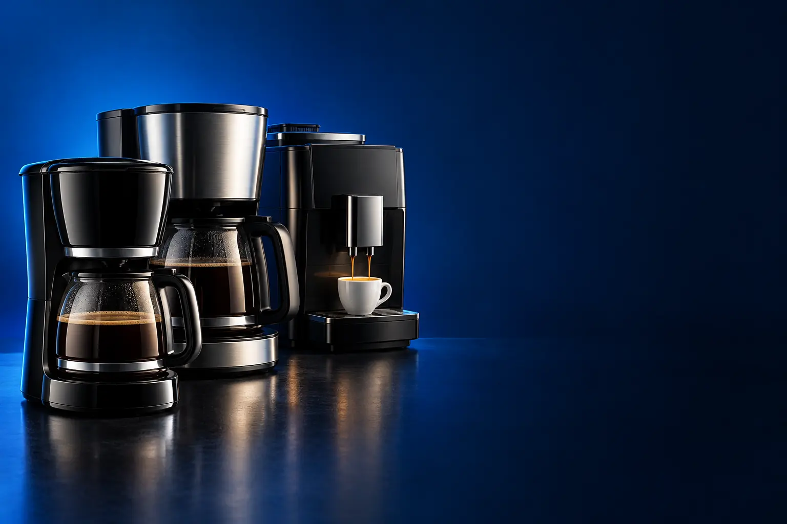

CAFÉ COADO (ELÉTRICA)
Melhor cafeteira elétrica custo-benefício
O cafezinho de todo dia, com pó e filtro. Barata de comprar e de manter.

Melhor custo-benefício para café coadoMondial Dolce Arome 18 xícaras
CURADORIA TECHAPROVADO · 2026
O cafezinho de garrafa, o espresso de cápsula e o grão moído na hora pedem máquinas bem diferentes. Separamos 18 modelos em 3 perfis, do custo-benefício ao top de linha, e dizemos para quem cada um vale a pena.

NOSSA LEITURA
Antes de olhar a máquina, pense em quanto você paga por xícara: o pó é o mais barato, a cápsula é a mais cara, e o grão fica no meio. A máquina mais cara pode sair mais barata em um ano.
COMECE POR AQUI
CAFÉ COADO (ELÉTRICA)
O cafezinho de todo dia, com pó e filtro. Barata de comprar e de manter.
CÁPSULA
Aperta um botão e o espresso sai igual todo dia. A cápsula custa mais por xícara.

EXPRESSO E SUPERAUTOMÁTICA
Café de cafeteria em casa, com pó ou grão. Custa mais na compra e menos por xícara.

A FICHA, TRADUZIDA
01 - TIPO DE CAFÉ
A cafeteira elétrica de filtro passa café em pó com água quente, como o coador de pano: faz o café de garrafa. A de cápsula usa uma porção pronta e lacrada, e faz espresso apertando um botão. A expresso de pó e a superautomática fazem espresso com café que você compra em pó ou em grão.
Para quem toma café com leite de manhã, a elétrica de filtro resolve. Para quem gosta de espresso e quer praticidade, cápsula. Para quem toma vários espressos por dia e quer o melhor sabor, grão moído na hora.
O sabor do espresso vem da pressão: a água passa pelo café com força, o que cria a crema, aquela espuma clara. Cafeteira de filtro nunca vai fazer espresso, por melhor que seja.
02 - CUSTO POR XÍCARA
A cápsula é a forma mais cara de tomar café: cada uma custa bem mais que a mesma quantidade de café em pó ou em grão. A máquina de cápsula é barata justamente porque o fabricante ganha nas cápsulas.
Faça a conta: se você toma 2 espressos por dia, em um ano são mais de 700 cápsulas. Nesse volume, uma expresso de pó ou uma superautomática pode se pagar com o que você economiza.
Cápsulas compatíveis (de outras marcas) baixam o custo no sistema Nespresso Original, que tem a maior oferta delas. Nos sistemas Dolce Gusto, TRES e Delta Q, a oferta é menor.
03 - PRESSÃO (BAR)
Bar é a unidade da pressão com que a água atravessa o café. O espresso tradicional usa por volta de 9 bar no ponto de extração; as máquinas anunciam 15, 19 ou 20 bar, que é a força máxima da bomba.
Na prática, qualquer máquina de 15 bar para cima faz espresso com crema. A diferença de sabor entre 15 e 20 bar é pequena; pesam mais o café, a moagem e a temperatura.
Por isso, não escolha só pelo número de bar. Uma superautomática de 15 bar com grão fresco faz café melhor que uma máquina de 20 bar com pó velho.
04 - LEITE
Há três jeitos de fazer bebida com leite. Cápsulas de leite em pó (Dolce Gusto, TRES) são práticas, mas o sabor é de leite em pó. O vaporizador manual (um bico que solta vapor) faz espuma com leite fresco, mas exige prática.
Os sistemas automáticos (Lattissima, PrimaLatte, LatteGo) puxam leite fresco de uma jarrinha e servem o cappuccino pronto. São os mais fáceis, mas precisam de limpeza depois de cada uso.
Se você toma café com leite todo dia, vale priorizar um sistema de leite fresco. Se toma espresso puro, não pague por ele.
05 - JARRA E PROGRAMAÇÃO
Nas cafeteiras de filtro, a jarra de vidro é mais barata, mas quebra; a de inox dura mais e segura o calor. A base aquecida mantém o café quente, mas depois de meia hora começa a deixá-lo amargo.
A programação (timer) deixa você preparar tudo à noite e acordar com o café passado. O filtro permanente dispensa o papel e se lava na pia.
Para quem serve muita gente, as cafeteiras sem jarra, com reservatório aquecido, mantêm o café fresco por horas.
A CURADORIA EM DETALHE
18 modelos da pesquisa
PERFIL · 6 MODELOS, DA ENTRADA AO TOP DE LINHA
A cafeteira elétrica de filtro é a mais barata de comprar e de manter: usa café em pó comum e faz a garrafa da família. Subindo a escada, entram jarra de inox, programação para o café ficar pronto quando você acorda e modelos para escritório.

COADO · ENTRADA 1 de 6
15 xícaras · corta-pingos · base aquecida
Ver preço na AmazonPOR DENTRO DA ESCOLHA
O básico que funciona: até 15 xícaras, sistema corta-pingos para tirar a jarra no meio do preparo, base que mantém o café quente e jarra de vidro resistente a choque térmico.
Faz o essencial sem frescura. A base aquecida mantém o café quente, mas com o tempo ela deixa o sabor mais amargo: o ideal é tomar logo.
| Capacidade | 15 xícaras |
|---|---|
| Jarra | Vidro |
| Corta-pingos | Sim |
| Base aquecida | Sim |
| Voltagem | 220 V |
Fonte: ficha e descrição do anúncio, conferidas em 02/11/2026. Dados informados pelo fabricante.
COADO · CUSTO-BENEFÍCIO 2 de 6
Melhor custo-benefício para café coado
18 xícaras · inox
Ver preço na AmazonPOR DENTRO DA ESCOLHA
Faz até 18 xícaras, tem acabamento em inox, corta-pingos e base antiaderente que mantém o café quente.
O salto sobre a Elgin é a capacidade e o acabamento, sem mudar o jeito de usar.
| Capacidade | 18 xícaras |
|---|---|
| Acabamento | Inox |
| Corta-pingos | Sim |
| Base aquecida | Antiaderente |
| Voltagem | 110 V |
Fonte: ficha e descrição do anúncio, conferidas em 02/11/2026. Dados informados pelo fabricante.

COADO · ALTERNATIVA 3 de 6
Outro caminho: individual
Passa direto no copo térmico · 600 W
Ver preço na AmazonPOR DENTRO DA ESCOLHA
Em vez da jarra, o café cai direto num copo térmico de inox que você leva para o trabalho ou para o carro.
Não é um degrau acima da Mondial, é outro jeito de tomar café.
| Formato | Individual, com copo térmico |
|---|---|
| Copo | Inox |
| Potência | 600 W |
| Voltagem | 110 V |
Fonte: ficha e descrição do anúncio, conferidas em 02/11/2026. Dados informados pelo fabricante.

COADO · INTERMEDIÁRIO 4 de 6
Jarra de inox · manter aquecido
Ver preço na AmazonPOR DENTRO DA ESCOLHA
A jarra de aço inox de 1,2 L não quebra e conserva melhor o calor que a de vidro. Tem função manter aquecido e corta-pingos.
O que muda aqui é a jarra: inox dura mais e segura o calor.
| Capacidade | 1,2 L |
|---|---|
| Jarra | Inox |
| Manter aquecido | Sim |
| Peso | 1,46 kg |
| Voltagem | 127 V |
Fonte: ficha e descrição do anúncio, conferidas em 02/11/2026. Dados informados pelo fabricante.

COADO · AVANÇADO 5 de 6
Timer de 24 h · intensidade ajustável · filtro permanente
Ver preço na AmazonPOR DENTRO DA ESCOLHA
Painel digital que agenda o preparo com até 24 horas de antecedência, função Aroma Strength para café mais forte, filtro permanente removível (sem papel) e capacidade de 1,5 L, até 38 xícaras.
O timer muda a rotina: você prepara à noite e acorda com o café passado.
| Capacidade | 1,5 L (38 xícaras) |
|---|---|
| Programação | Até 24 h |
| Intensidade | Aroma Strength |
| Filtro | Permanente, removível |
| Desligamento | Automático |
Fonte: ficha e descrição do anúncio, conferidas em 02/11/2026. Dados informados pelo fabricante.

COADO · TOP DE LINHA 6 de 6
Top de linha para café coado
35 xícaras · sem jarra · mantém fresco por 4 h
Ver preço na AmazonPOR DENTRO DA ESCOLHA
Não tem jarra: o café fica num reservatório interno com aquecimento brando, que mantém o sabor por até 4 horas sem queimar, e você se serve apertando a alavanca com uma mão.
O aquecimento brando resolve o maior problema da cafeteira comum: o café que vai ficando amargo na base. Faz até 35 xícaras.
| Capacidade | 35 xícaras |
|---|---|
| Jarra | Não tem (reservatório interno) |
| Manter fresco | Até 4 h |
| Voltagem | 220 V |
Fonte: ficha e descrição do anúncio, conferidas em 02/11/2026. Dados informados pelo fabricante.
PERFIL · 6 MODELOS, DA ENTRADA AO TOP DE LINHA
A cafeteira de cápsula faz espresso e outras bebidas com um botão, sempre do mesmo jeito. A máquina é barata; o custo está na cápsula, então escolha pensando em qual sistema você vai comprar todo mês: Nespresso, Dolce Gusto, TRES ou Delta Q.

POR DENTRO DA ESCOLHA
Pequena e com 19 bar de pressão para um espresso cremoso. Tem três botões de volume programável (café longo e chá) e bandeja ajustável para xícara alta.
É a máquina de cápsula mais barata que passa nos filtros. Antes de comprar, confira se você encontra as cápsulas Delta Q perto de casa.
| Sistema | Delta Q |
|---|---|
| Pressão | 19 bar |
| Botões | 3, volumes programáveis |
| Voltagem | 127 V |
Fonte: ficha e descrição do anúncio, conferidas em 02/11/2026. Dados informados pelo fabricante.
CÁPSULA · CUSTO-BENEFÍCIO 2 de 6
Melhor custo-benefício em cápsula
Multibebidas · 15 bar · descarte externo
Ver preço na AmazonPOR DENTRO DA ESCOLHA
A máquina do sistema TRES, da 3 Corações: faz espresso, cappuccino, chocolate, chá e café filtrado. Tem reservatório de 950 ml, descarte externo da cápsula e suporte ajustável para copo alto.
A cápsula TRES é das mais fáceis de encontrar e tem muitos sabores.
| Sistema | TRES (3 Corações) |
|---|---|
| Pressão | 15 bar |
| Reservatório | 950 ml |
| Bebidas | Espresso, cappuccino, chá, chocolate e mais |
| Voltagem | 127 V |
Fonte: ficha e descrição do anúncio, conferidas em 02/11/2026. Dados informados pelo fabricante.

CÁPSULA · ALTERNATIVA 3 de 6
Outro caminho: Dolce Gusto
Multibebidas · função XL · aviso de limpeza
Ver preço na AmazonPOR DENTRO DA ESCOLHA
Do sistema Nescafé Dolce Gusto, com o maior cardápio de bebidas com leite e chocolate. A função XL faz um extra longo com um clique, e a máquina avisa a hora de limpar.
Não é um degrau acima da TRES, é outro sistema de cápsula. Escolha pelo sistema que você prefere comprar.
| Sistema | Nescafé Dolce Gusto |
|---|---|
| Funções | XL, eco, aviso de limpeza |
| Bebidas | Espresso, cappuccino, chocolate e mais |
Fonte: ficha e descrição do anúncio, conferidas em 02/11/2026. Dados informados pelo fabricante.

CÁPSULA · INTERMEDIÁRIO 4 de 6
19 bar · ultracompacta · aquece em segundos
Ver preço na AmazonPOR DENTRO DA ESCOLHA
A Nespresso mais compacta, com 8,4 cm de largura: 19 bar de pressão, aquecimento em segundos e dois botões programáveis (Espresso e Lungo). Desliga sozinha depois de 9 minutos.
O sistema Nespresso original tem a maior oferta de cápsulas, inclusive compatíveis de outras marcas, o que baixa o custo por xícara.
| Sistema | Nespresso Original |
|---|---|
| Pressão | 19 bar |
| Largura | 8,4 cm |
| Botões | Espresso e Lungo |
| Voltagem | 127 V |
Fonte: ficha e descrição do anúncio, conferidas em 02/11/2026. Dados informados pelo fabricante.

CÁPSULA · AVANÇADO 5 de 6
19 bar · aquece em 25 s · design premiado
Ver preço na AmazonPOR DENTRO DA ESCOLHA
Mesmo sistema da Essenza, com design premiado, reservatório maior e acabamento mais robusto. Aquece em 25 segundos e tem dois botões programáveis.
O que se paga aqui é design e robustez, não café melhor.
| Sistema | Nespresso Original |
|---|---|
| Pressão | 19 bar |
| Aquecimento | 25 s |
| Botões | Espresso e Lungo |
| Voltagem | 110 V |
Fonte: ficha e descrição do anúncio, conferidas em 02/11/2026. Dados informados pelo fabricante.

CÁPSULA · TOP DE LINHA 6 de 6
Top de linha em cápsula
Cappuccino com leite fresco num toque
Ver preço na AmazonPOR DENTRO DA ESCOLHA
Faz cappuccino e latte macchiato com leite de verdade, num toque: a jarrinha de leite encaixa na máquina e ela vaporiza e serve. Também faz Espresso e Lungo.
É a única da escada que usa leite fresco. Para quem toma só espresso, a Essenza Mini resolve por um terço do preço.
| Sistema | Nespresso Original |
|---|---|
| Leite | Sistema de leite em um toque |
| Bebidas | Espresso, Lungo, cappuccino, latte macchiato |
| Voltagem | 110 V |
Fonte: ficha e descrição do anúncio, conferidas em 02/11/2026. Dados informados pelo fabricante.
PERFIL · 6 MODELOS, DA ENTRADA AO TOP DE LINHA
Para quem quer espresso de verdade sem pagar cápsula. As de entrada usam café em pó e um porta-filtro; as superautomáticas moem o grão na hora e fazem tudo sozinhas. É o maior investimento inicial, e o menor custo por xícara no longo prazo.

EXPRESSO · ENTRADA 1 de 6
20 bar · pó e cápsula · vaporizador
Ver preço na AmazonPOR DENTRO DA ESCOLHA
Espresso com café em pó e também com cápsula: bomba de 20 bar, vaporizador de água quente e preparo de 2 xícaras por vez.
É a porta de entrada no espresso de verdade. Aceitar cápsula dá flexibilidade nos dias de pressa.
| Pressão | 20 bar |
|---|---|
| Café | Pó e cápsula |
| Vaporizador | Água quente |
| Xícaras por vez | 2 |
| Voltagem | 127 V |
Fonte: ficha e descrição do anúncio, conferidas em 02/11/2026. Dados informados pelo fabricante.
EXPRESSO · CUSTO-BENEFÍCIO 2 de 6
Melhor custo-benefício em expresso
Cappuccino num toque · reservatório de leite
Ver preço na AmazonPOR DENTRO DA ESCOLHA
Espresso, cappuccino e latte num toque, com reservatório de leite que a máquina vaporiza sozinha. Painel touch e uso de café em pó.
Faz o que a Lattissima faz, mas com pó comum, o que derruba o custo por xícara.
| Bebidas | Espresso, cappuccino, latte |
|---|---|
| Leite | Reservatório com vaporização automática |
| Painel | Touch |
| Café | Pó |
| Voltagem | 127 V |
Fonte: ficha e descrição do anúncio, conferidas em 02/11/2026. Dados informados pelo fabricante.

EXPRESSO · INTERMEDIÁRIO 3 de 6
Moe o grão · 12 níveis de moagem · 15 bar
Ver preço na AmazonPOR DENTRO DA ESCOLHA
A superautomática de entrada: moe o grão na hora com moedor de cerâmica (12 níveis), tem 3 intensidades de aroma e 3 tamanhos de bebida, e painel touch My Coffee Choice.
O grão moído na hora é o maior salto de sabor da escada.
| Moedor | Cerâmica, 12 níveis |
|---|---|
| Pressão | 15 bar |
| Ajustes | 3 intensidades, 3 tamanhos |
| Painel | Touch |
| Voltagem | 110 V |
Fonte: ficha e descrição do anúncio, conferidas em 02/11/2026. Dados informados pelo fabricante.

EXPRESSO · AVANÇADO 4 de 6
Cappuccino automático · moe o grão · 2 anos de garantia
Ver preço na AmazonPOR DENTRO DA ESCOLHA
Soma ao moedor de cerâmica o sistema LatteGo, que faz cappuccino automático com leite fresco e se lava em segundos. Faz espresso, americano, cappuccino e água quente.
O LatteGo é o sistema de leite mais fácil de limpar do mercado, porque não tem tubos. Tem 2 anos de garantia.
| Moedor | Cerâmica, 12 níveis |
|---|---|
| Leite | LatteGo (automático) |
| Bebidas | Espresso, americano, cappuccino, água quente |
| Pressão | 15 bar |
| Garantia | 2 anos |
Fonte: ficha e descrição do anúncio, conferidas em 02/11/2026. Dados informados pelo fabricante.

EXPRESSO · ALTERNATIVA 5 de 6
Outro caminho: vaporizador manual
Superautomática clássica · vaporizador manual
Ver preço na AmazonPOR DENTRO DA ESCOLHA
A superautomática moe o grão, faz curto ou longo com um botão e tem bico vaporizador manual para você fazer a espuma do leite.
Não é um degrau acima da Philips 2300, é outra forma de fazer o leite: manual, como na cafeteria. Durabilidade conhecida e peças fáceis de achar.
| Tipo | Superautomática |
|---|---|
| Leite | Vaporizador manual |
| Bebidas | Curto e longo |
| Voltagem | 220 V |
Fonte: ficha e descrição do anúncio, conferidas em 02/11/2026. Dados informados pelo fabricante.

EXPRESSO · TOP DE LINHA 6 de 6
Top de linha em expresso
20 bebidas · LatteGo · 5 perfis de usuário
Ver preço na AmazonPOR DENTRO DA ESCOLHA
Faz 20 bebidas num toque, incluindo Iced Coffee, com LatteGo para o leite e o painel My Coffee Choice, que guarda o café preferido de até 5 pessoas.
O topo serve à variedade e à família: perfis salvos e cardápio grande. Para uma pessoa que toma espresso e cappuccino, a 2300 basta.
| Bebidas | 20, incluindo Iced Coffee |
|---|---|
| Leite | LatteGo |
| Perfis | Até 5 pessoas |
| Moedor | Cerâmica, 12 níveis |
| Voltagem | 110 V |
Fonte: ficha e descrição do anúncio, conferidas em 02/11/2026. Dados informados pelo fabricante.
Nenhum modelo encontrado. Tente outro termo ou volte para Todos.
LADO A LADO
| Modelo | Perfil | Posição | Sistema | Destaque |
|---|---|---|---|---|
| Elgin Coffee Break 15 xícaras | Coado | Entrada | 15 xícaras | 15 xícaras · corta-pingos · base aquecida |
| Mondial Dolce Arome 18 xícaras | Coado | Custo-benefício | 18 xícaras | 18 xícaras · inox |
| Oster 2Day com copo térmico | Coado | Alternativa | Individual, com copo térmico | Passa direto no copo térmico · 600 W |
| Oster OCAF650 jarra inox 1,2 L | Coado | Intermediário | 1,2 L | Jarra de inox · manter aquecido |
| Electrolux programável 38 xícaras | Coado | Avançado | 1,5 L (38 xícaras) | Timer de 24 h · intensidade ajustável · filtro permanente |
| Hamilton Beach BrewStation Elite | Coado | Top de linha | 35 xícaras | 35 xícaras · sem jarra · mantém fresco por 4 h |
| Delta Q MiniQool | Cápsula | Entrada | Delta Q | Cápsula Delta Q · 19 bar · compacta |
| TRES LOV (3 Corações) | Cápsula | Custo-benefício | TRES (3 Corações) | Multibebidas · 15 bar · descarte externo |
| Dolce Gusto Genio S Plus | Cápsula | Alternativa | Nescafé Dolce Gusto | Multibebidas · função XL · aviso de limpeza |
| Nespresso Essenza Mini | Cápsula | Intermediário | Nespresso Original | 19 bar · ultracompacta · aquece em segundos |
| Nespresso CitiZ | Cápsula | Avançado | Nespresso Original | 19 bar · aquece em 25 s · design premiado |
| Nespresso Lattissima One | Cápsula | Top de linha | Nespresso Original | Cappuccino com leite fresco num toque |
| Oster OCAF900 Digital | Expresso | Entrada | 20 bar | 20 bar · pó e cápsula · vaporizador |
| Oster PrimaLatte Touch | Expresso | Custo-benefício | Cappuccino num toque · reservatório de leite | |
| Philips Walita Superautomática Série 1200 | Expresso | Intermediário | Cerâmica, 12 níveis | Moe o grão · 12 níveis de moagem · 15 bar |
| Philips Walita Série 2300 LatteGo | Expresso | Avançado | Cerâmica, 12 níveis | Cappuccino automático · moe o grão · 2 anos de garantia |
| De'Longhi Magnifica ECAM 22.110 | Expresso | Alternativa | Superautomática | Superautomática clássica · vaporizador manual |
| Philips Walita Superautomática Série 5500 | Expresso | Top de linha | Cerâmica, 12 níveis | 20 bebidas · LatteGo · 5 perfis de usuário |
CONSIDERAÇÕES FINAIS
O sistema com mais cápsulas, inclusive compatíveis, numa máquina compacta.
Os tops de linha (Hamilton Beach BrewStation, Nespresso Lattissima One e Philips Série 5500) fazem sentido para escritório, para quem toma cappuccino todo dia ou para família com muitos gostos. Para o café de todo dia, os custo-benefício resolvem.
Para café coado, a Mondial Dolce Arome. De cápsula, a TRES LOV. Para espresso com leite sem cápsula, a Oster PrimaLatte Touch.
Vale pela praticidade e pelo sabor constante, mas o custo por xícara é o mais alto. Para quem toma muitos espressos por dia, uma expresso de pó ou de grão sai mais barata em pouco tempo.
Nespresso tem a maior variedade de cápsulas, inclusive compatíveis, e é focada em espresso. Dolce Gusto e TRES têm mais bebidas com leite e chocolate. As cápsulas não são intercambiáveis entre sistemas.
É a máquina que moe o grão, prepara o espresso e, em alguns modelos, faz o cappuccino sozinha, num toque. Custa mais, mas o café em grão é mais barato que a cápsula.
Porque ele muda várias vezes por dia. Usamos o preço só para montar a escada de cada perfil; o botão leva ao valor atualizado na loja.
TRANSPARÊNCIA EDITORIAL
Separamos os perfis pelo que as pessoas mais procuram: café coado, cápsula e expresso. Cada modelo precisa responder com clareza "para quem ele é o certo".
Em cada perfil há modelos em faixas de preço diferentes, e cada degrau precisa entregar algo que o anterior não entrega. Dois modelos com a mesma proposta não entram juntos.
Ficha e especificações foram conferidas nos anúncios das lojas em 02/11/2026.
Os links de compra desta página são de afiliado: se você comprar por eles, o TechAprovado pode ganhar uma comissão, sem custo adicional para você. Isso não muda a ordem nem a escolha dos produtos.
📲 GUIAS E DICAS NO SEU FEED
Dicas práticas antes de comprar, em carrosséis e vídeos curtos, sempre com link para o guia completo.